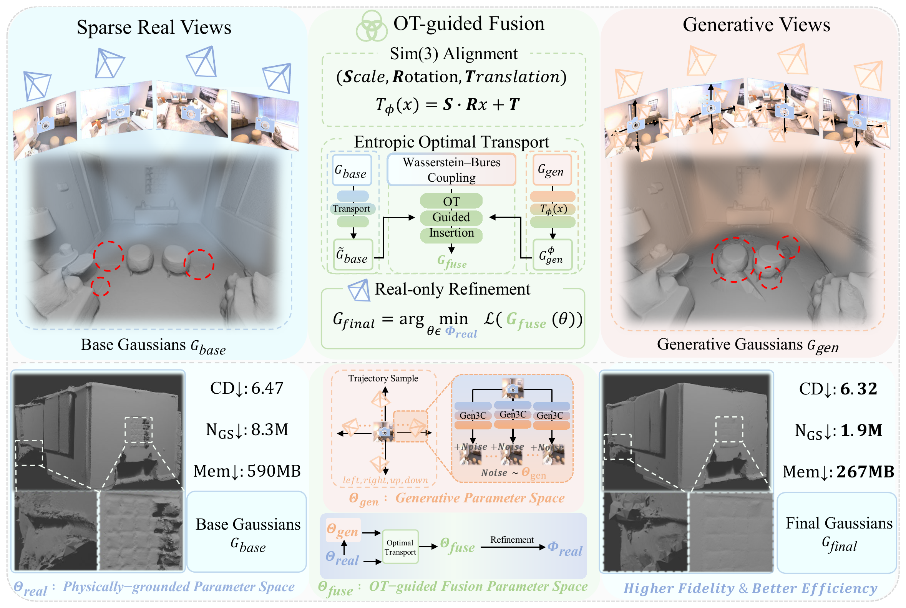

RGGS: Compact Re-Grounded 3D Gaussian Splatting for Sparse-View Indoor Surface Reconstruction
ArXiv 2026
1 Hefei University of Technology · 2 South China University of Technology · 3 Nanyang Technological University
Abstract
Sparse-view 3D Gaussian Splatting for indoor surface reconstruction is inherently under-constrained, often overfitting the observed views and producing incomplete or unstable geometry in occluded regions. Although existing generative models can provide powerful generative priors to expand visual coverage, directly using generated views as pixel-level supervision often introduces metric drift due to inconsistencies with real observations. In this paper, we present RGGS, a compact Re-Grounded Gaussian Splatting framework that fuses generative priors within the model space while maintaining geometric consistency. Specifically, we first construct two Gaussian fields independently: a base field optimized from real observations and a generative field learned from camera-controlled synthetic views. The two fields are subsequently aligned within a shared coordinate system through a Sim(3) transformation. We then formulate an entropic optimal transport coupling under the Wasserstein--Bures metric to guide field fusion by jointly transporting Gaussian means and anisotropic covariances. The resulting OT-based coupling enables selective transport, distillation, and insertion, effectively integrating reliable generative content while suppressing inconsistent or noisy structures. Finally, we perform a real-view refinement stage that re-projects the fused field onto the manifold induced by real observations, thereby restoring geometric consistency and improving reconstruction accuracy. Extensive experiments on 17 scenes from Replica, ScanNet++, and MipNeRF360 demonstrate that RGGS consistently improves mesh reconstruction quality while achieving competitive novel view synthesis performance. Comprehensive ablation studies further validate the effectiveness of each component.
Method

Mesh Comparison
Qualitative mesh reconstruction comparison on the Replica dataset

Qualitative mesh reconstruction comparison on the ScanNet++ dataset

Qualitative novel view synthesis comparison